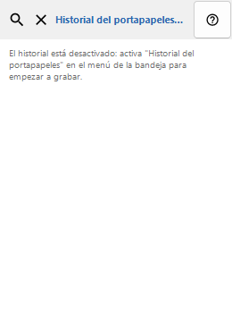
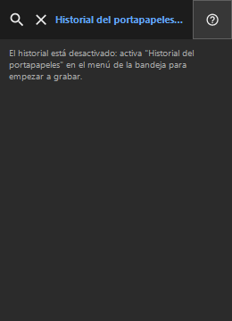

Historial del portapapeles
Para qué sirve
El historial se guarda solo localmente y se cifra con Windows DPAPI para tu cuenta.


Orden de uso
Lee las explicaciones numeradas, elige los valores necesarios y continúa con el comando de la ventana.